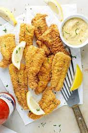
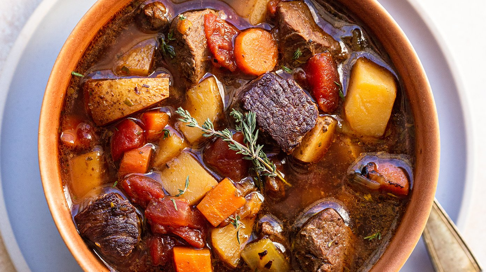

Main Courses:
The Catfish Campaign: Tennessean Catfish Fry - A classic Southern dish representing Jackson's home state.
Venison Victory Stew: Venison Stew - Venison, often hunted in the Tennessee wilderness, served as a hearty meal.
Jackson's Game of Pies: Wild Game Pie - Featuring various game meats like rabbit, squirrel, and deer, which were common in Jackson's time.